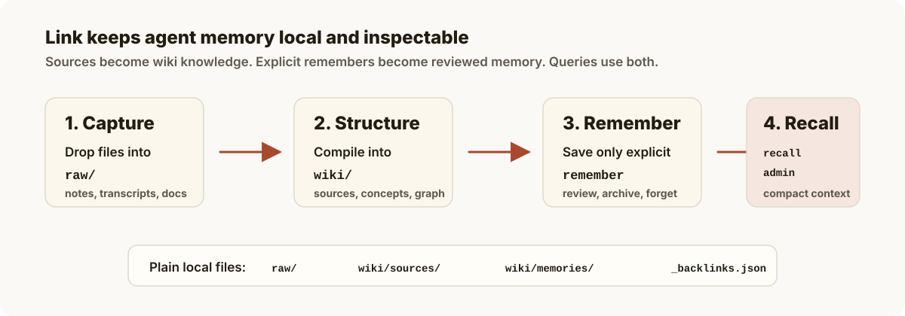
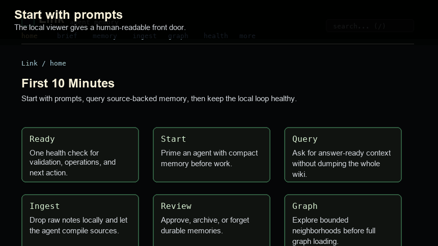
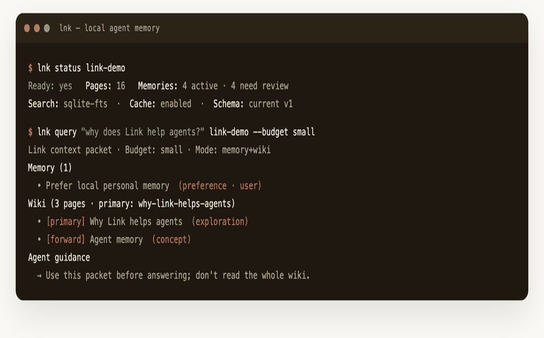
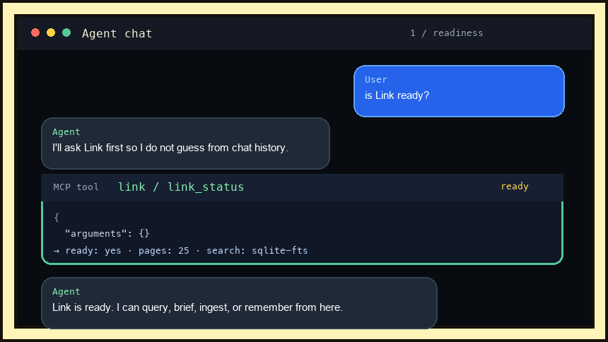
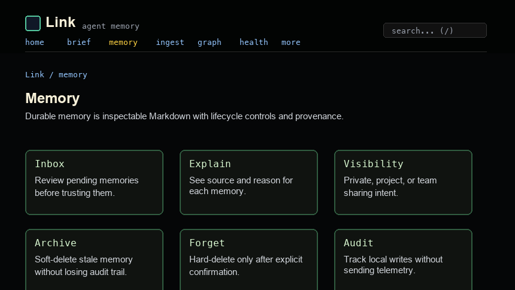
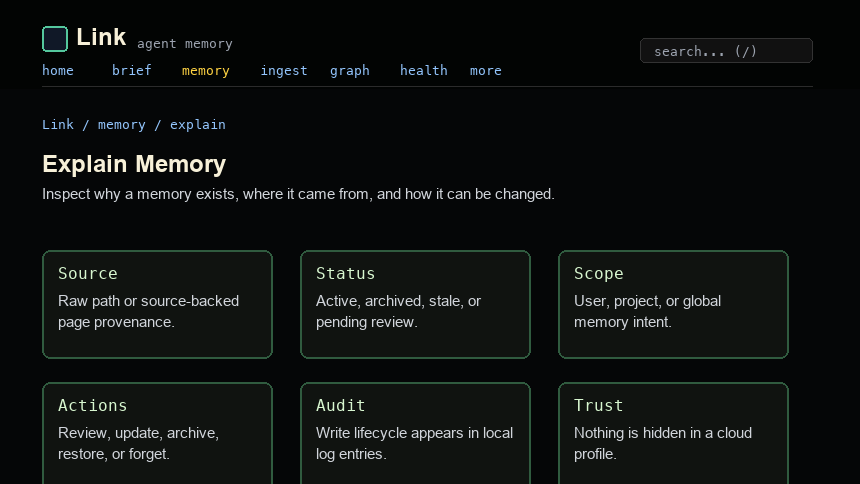
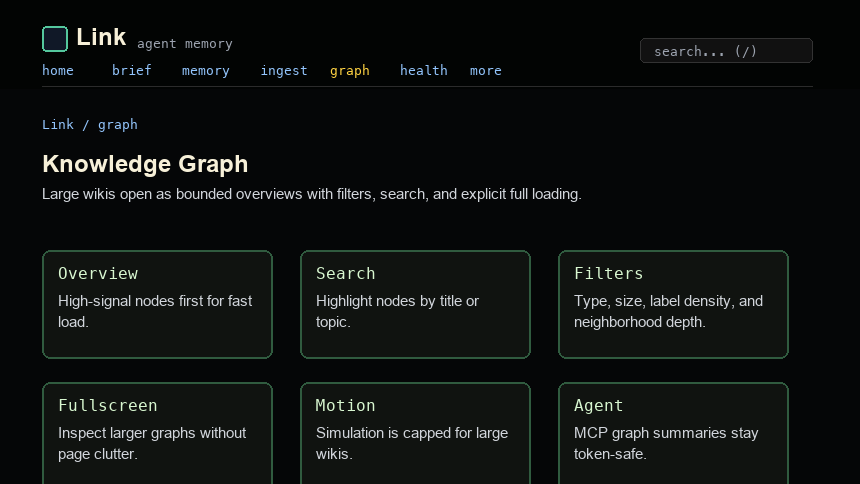

Personal memory
Preferences, decisions, facts, and project context stay durable across agent sessions.
Source-backed Markdown memory for Codex, Claude, Cursor, Kiro, VS Code, Copilot, and any MCP client. Local files. Inspectable sources. Budgeted context.
The product
Link turns raw notes, transcripts, project context, and explicit memories into a source-backed wiki. Agents query a compact packet instead of reading your entire folder.
Preferences, decisions, facts, and project context stay durable across agent sessions.
Raw sources compile into Markdown pages with citations, backlinks, and reviewable provenance.
One local memory works across MCP-capable tools through the same query, brief, graph, and memory lifecycle tools.
Smart query packets return the right memory, pages, graph neighborhood, and follow-up actions without flooding tokens.
No hosted backend, no telemetry, no cloud lock-in. Your memory stays on disk as plain Markdown.
Capture, propose, approve, review, archive, restore, forget, and explain what Link remembers.
Open the same wiki/ folder in Obsidian when you want a richer Markdown editor or graph view.
How it works
Raw sources become structured wiki pages. Explicit remembers become reviewed memory. Agents retrieve compact MCP context packets instead of reading your whole folder.

First 2 minutes
The demo includes raw sources, wiki pages, one starter memory, backlinks, graph context, and a compact query packet.
# macOS
brew install gowtham0992/link/link
link demo
link next link-demo
link serve link-demo
# or from source
git clone https://github.com/gowtham0992/link.git
cd link
python3 link.py demo
python3 link.py next link-demo
python3 link.py serve link-demo
# then try
link query "why does Link help agents?" link-demo --budget small
link brief "working on agent memory" link-demo
link benchmark "agent memory" link-demoThree surfaces
The web UI, CLI, and MCP server all operate on the same local Markdown wiki. Read it like a local document, script it from a terminal, or let an agent query the same memory through MCP.
link serve only starts the human web viewer. The CLI and MCP server read the same local files directly, so agents can query Link when the viewer is closed.

Read source-backed pages in a quiet local wiki, then jump to ingest, memory review, health, captures, and graph tools.

Run status checks, query packets, briefs, validation, backup, benchmark, and repair from a terminal.

Give Codex, Claude, Cursor, Kiro, VS Code, Copilot, and other agents the same local memory.
Visible trust
A memory is not a hidden vector. It is a Markdown page with status, scope, source, review state, graph links, and an audit trail.



Agent contract
Check readiness, brief before work, ingest raw files, remember explicit facts, query smart context, validate after writes, and explain why a memory exists.
Read next
The docs are arranged by user path: try the demo, understand the model, wire MCP, then use the CLI and maintenance tools when you need them.
Run the demo, add one source, save one direct memory, and verify the loop.
Understand where Link fits versus notes apps, hosted memory APIs, agent runtimes, and graph memory systems.
Use the local viewer as a readable wiki with grouped memory, ingest, health, graph, and audit tools.
Understand raw sources, wiki pages, memories, graph indexes, and budgeted query packets.
Install the MCP server and teach local agents how to use Link reliably.
Every local command, grouped by daily workflow and maintenance jobs.
Local endpoints for status, query, memory, graph, validation, and web UI actions.
Local-first constraints, secret scanning, backup behavior, and HTTP safety boundaries.
PR expectations, test gates, branch policy, and what not to include in public changes.
Fix MCP setup, blocked ingest, stale graph indexes, slow wikis, and Python packaging issues.